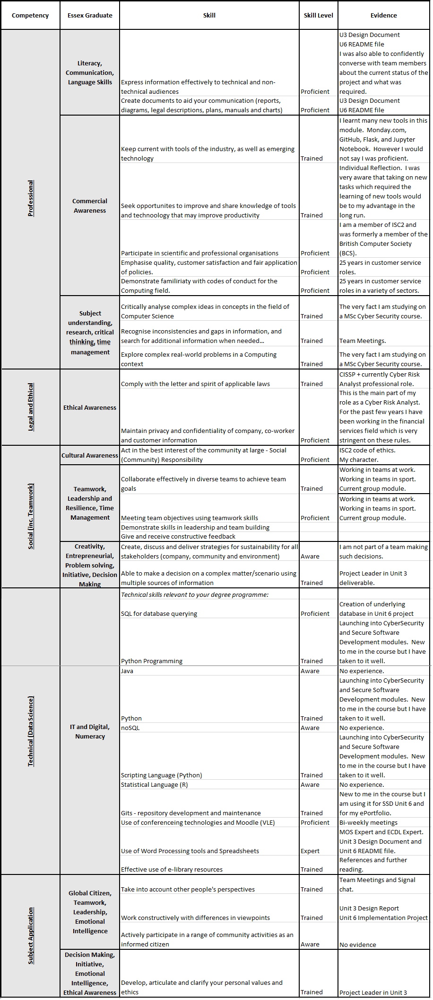

Secure Software Development

Artefacts
Feedback (Design Document)
| Knowledge & Understanding | You have done well to consider the system requirements and assumptions you would need going forward. You have shown good consideration for the technical aspects of your approach and what tools / libraries you will use to build your application. It would be good to see some rationale behind your choices, was this programming language / database / software stack chosen over any other for any reason? What was your rationale? |
| Application of Knowledge | You have done well to consider the security risks to your domain and have considered some solutions to address these issues. It would be good to see more detail around how the approach you have chosen to take will be mitigating these risks. |
| Criticality | You have constructed a good selection of diagrams to detail your design and development plan. You have clearly considered how the user interacts with the system. Try to ensure continuity through your diagrams however, for instance, your sequence diagram details a slightly different process to your activity diagram. I am not sure that you have total consensus on how the application is to be developed going forwards. More critical thinking and justification of choices would be development points for this assignment. |
| Structure & Presentation | You have referenced really well and used relevant examples to the content of your design document. It would be good to have seen the list of tools and libraries to be used, up in the main document and the OWASP and stride details down in the appendix, as the tools and libraries tables show the team’s thinking better than te infographics. |
Feedback (Implementation Project)
Reflection
Unit 1
A slow week in terms of summative work. The team has not been formed yet and the seminar was only attended by myself and was very short. I have spent the week reading lots of material to get myself prepared for when the real work begins.
Unit 2
Again, a slow week. It has been decided that the team will consist of all 7 participants of the module, however we have not had any work done at this point, and we have only one meeting held. I was frustrated I was unable to join this. We have a meeting tomorrow, I hope we can make some good ground in this. My role in the team has been to take minutes of meetings, and to contribute to the assignment like everyone else. I feel I have done this to a good standard.
Unit 3
A very busy week getting the Design Document in. I felt very motivated to get as good a project in as possible and I took on a lot of work personally to get it done. Probably too much, but was I mentioned before, I have problems letting go! The project is in, however, and I believe we have made a very good submission.
Unit 4
The first week of the implementation project has been a tale of two halves for me. Jun has been extremely proactive in bringing the project front end together so we can all work on it. I have similarly been very proactive by assembling the backend database for everyone to use. However, I have been trying for three days to set up Flask to work correctly on my home PC but I have had so many issues and it still is not working. We have a meeting today to discuss how we are getting on with our work and I am frustrated to say I have spent hours and hours and achieved nothing (in terms of coding / testing the front end). We will have to make it clear what is required to make the program run, in our requirements section of the ReadMe file when we submit.
Unit 5
A more productive week, I have designed the database and the database connection now, and produced a fully functioning file listing page. I am happy with that and handed it over to Muhammed to put into HTML. The last 2 days have been less busy while waiting for others to get the pages together so we can begin testing and implementing further security measures.
Unit 6
Professional Skills Matrix
In order to help you with your professional development, this matrix helps you ensure you are developing the required skills for your chosen role and have the evidence to prove that development. Ensure you complete it in line with your reflection. You will then need to then create an action plan based on your review. This does not need to be very long but will serve as a reminder at the end of your programmespecially if you complete a learning loop. You might find a SWOT analysis helpful in the completion of the matrix and the development of an action plan.

Learning Loop
This helps you to tie up your learning across the modules, for a holistic perspective of the programme. You should then be able to apply it to your organisation’s work/project, where applicable. The loop should also include a review of Skills Matrices and action plans from individual modules. You could share it with the Head of Computing at the end of your programme as part of your final feedback on the course.